MECHA
Captures desktop
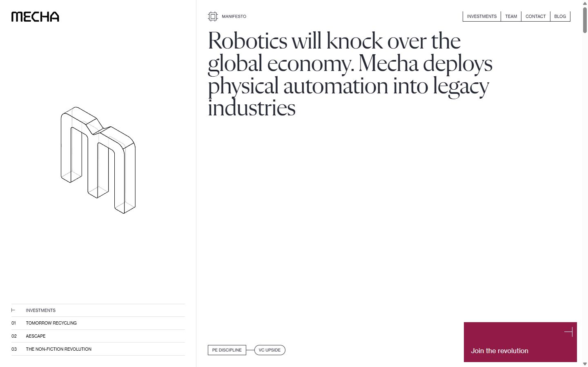

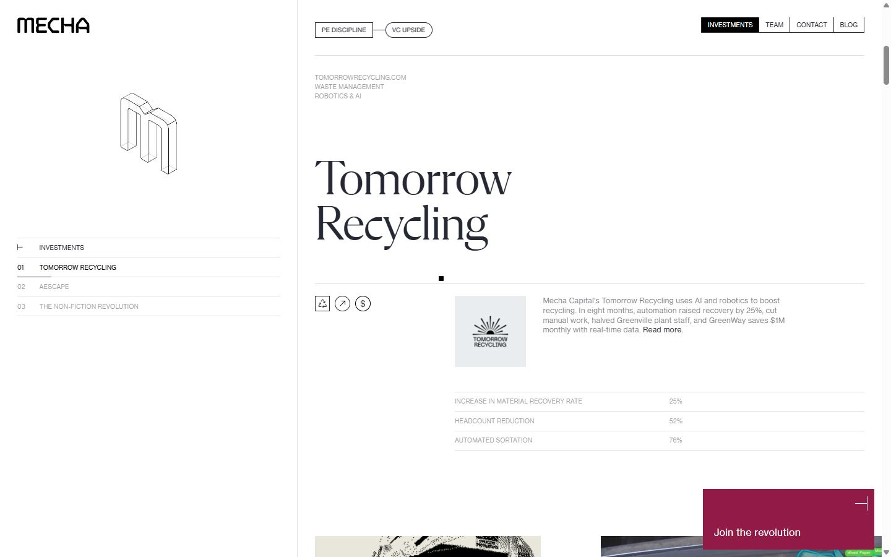
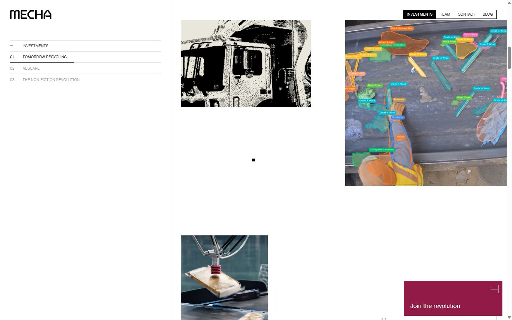
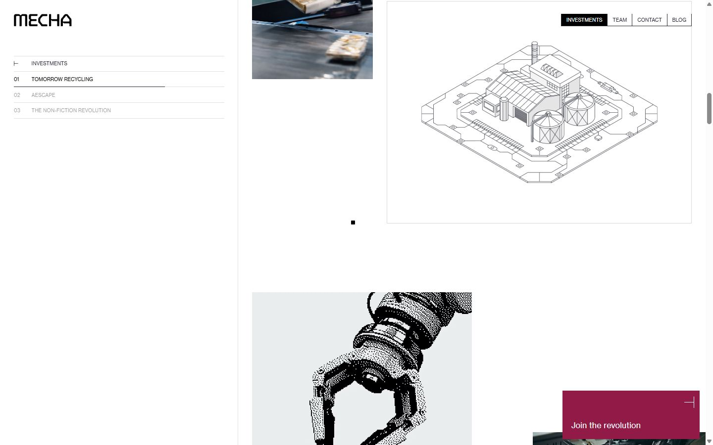
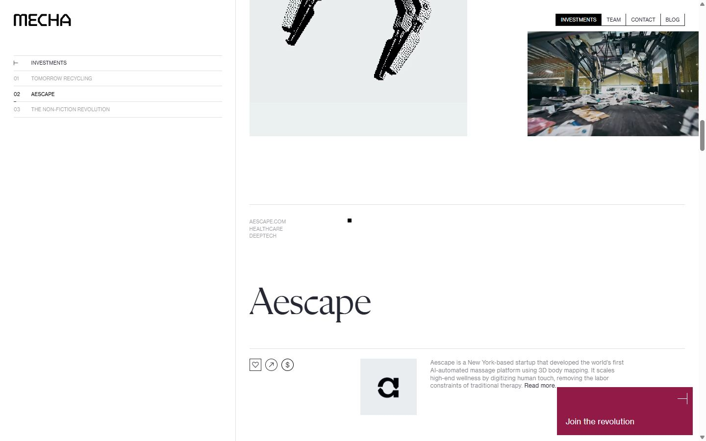
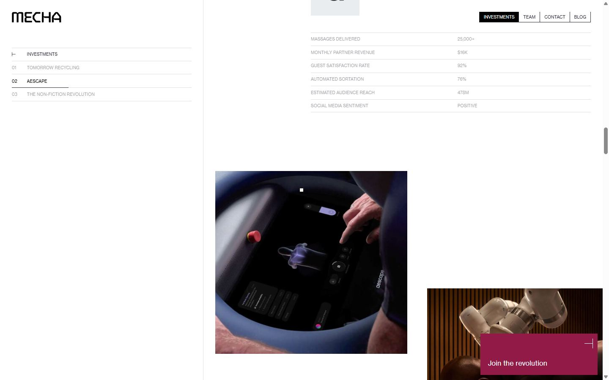
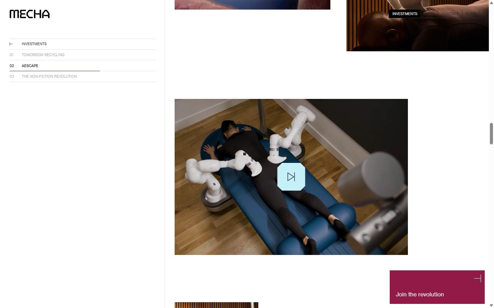
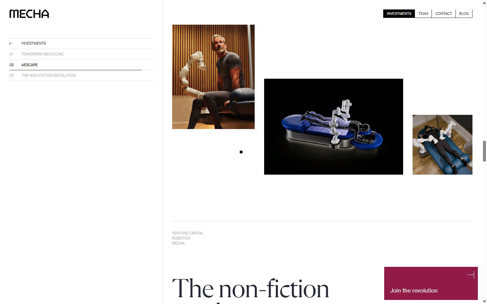
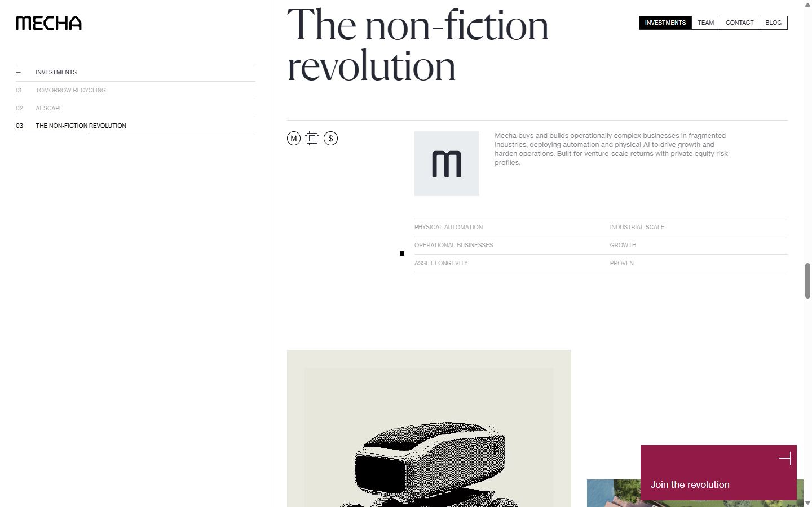
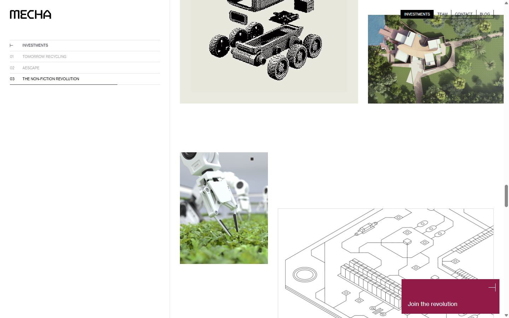
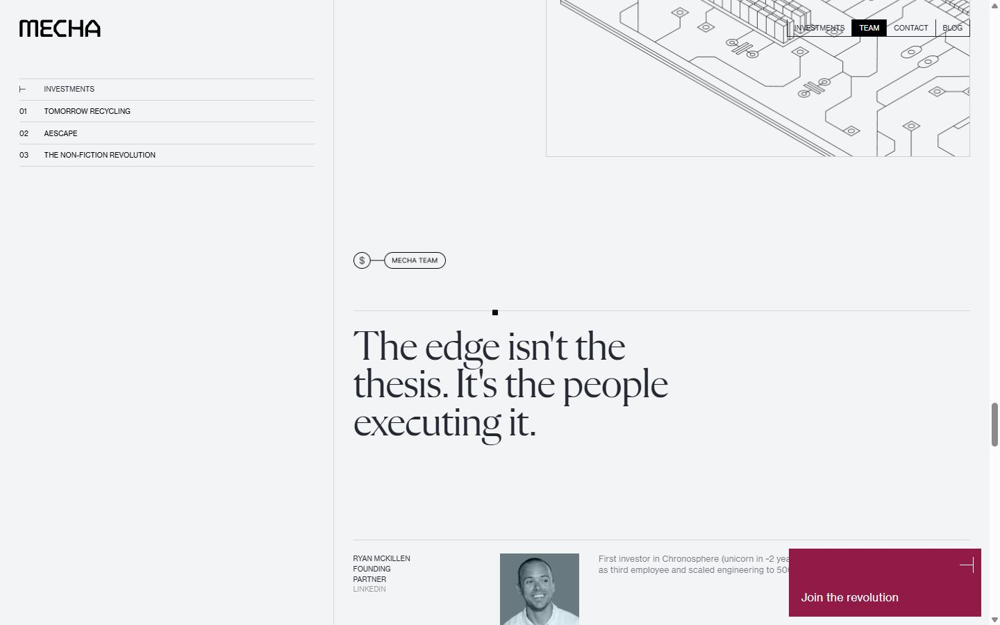
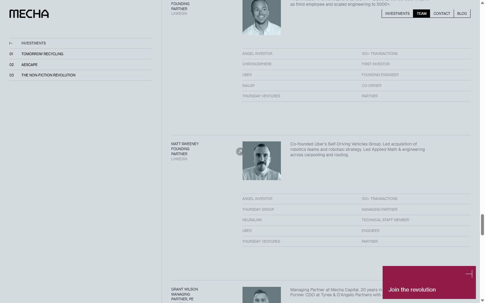
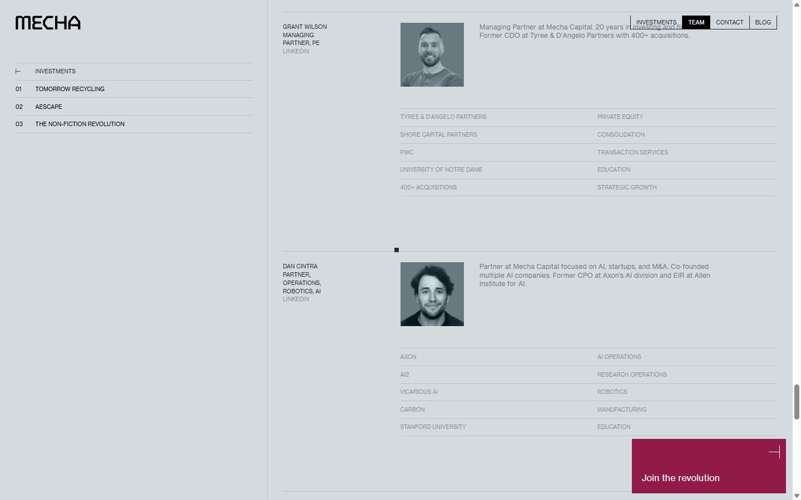
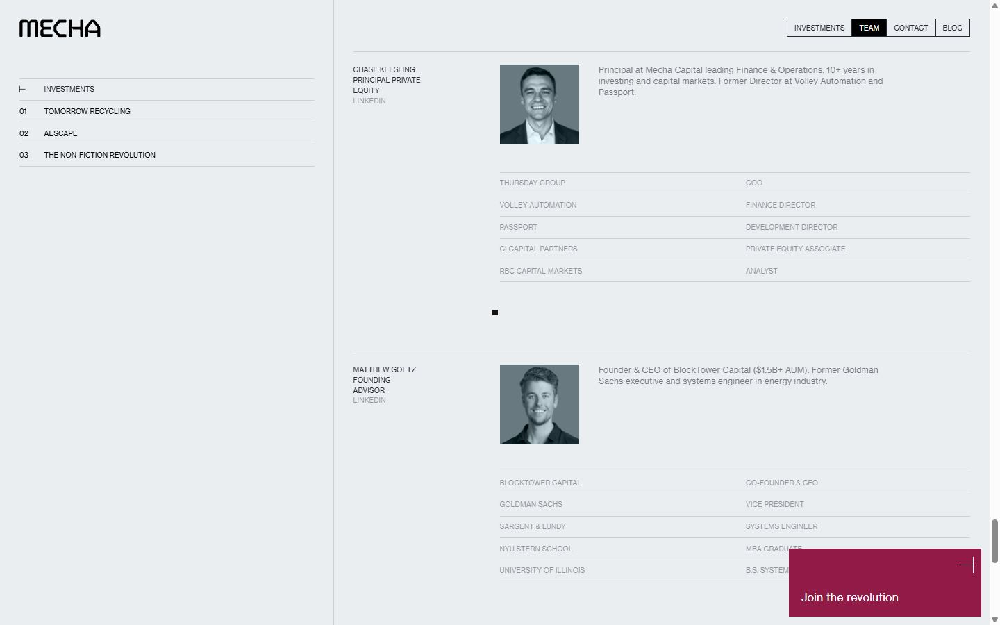
Pages internes
Mobile
Stack détectée
DrawSVG/MorphSVG, GSAP, Lenis, Locomotive Scroll, Lottie, ScrollTrigger, SplitText/SplitType, Three.js, Virtual scroll, WebGL, Webflow, jQuery
Versions : GSAP 3.15.0 · Three.js r?
Shaders GLSL personnalisés extraits : 5 (voir shaders.glsl)
Design tokens
Couleurs (fonds, pondérées par surface)
#ffffff · #ebf0f0 · #e9edef · #ebeae0 · #911a46 · #000000 · #262933
Couleurs de texte
#262933 · #000000 · #ffffff
Polices utilisées (par volume de texte)
Neue Haas Grotesk · Flecha M · \Haas Grot Tex
Fichiers de police chargés
Typographie
| Élément | Police | Taille | Graisse | Interligne | Interlettrage | Casse |
|---|---|---|---|---|---|---|
| h1 | "Flecha M", Verdana, sans-serif | 59.3736px | 400 | 54.6237px | -1.18747px | none |
| h2 | "Flecha M", Verdana, sans-serif | 59.3736px | 400 | 54.6237px | -1.18747px | none |
| p | "Neue Haas Grotesk", Verdana, sans-serif | 9.8956px | 400 | 14.8434px | 0.098956px | uppercase |
| a | "Neue Haas Grotesk", Verdana, sans-serif | 15.833px | 400 | 23.7494px | normal | none |
| body | "Neue Haas Grotesk", Verdana, sans-serif | 15.833px | 400 | 23.7494px | normal | none |
Échelle des tailles de texte
9.8956px (242) · 15.833px (44) · 11.8747px (26) · 93px (13) · 59.3736px (11) · 79.1648px (5)
Arrondis
1px
Transitions CSS fréquentes
Points de rupture (media queries)
991px · 767px · 479px · 768px · 0px · 480px · 1920px · 1440px · 375px · 320px
Animations CSS (@keyframes)
spin
Variables CSS (:root)
--_🟢-colors---primary--pure-white: #fff; --body: "Neue Haas Grotesk", Verdana, sans-serif; --_🟢-colors---primary--pure-black: var(--_🟢-colors---palette--dark-gray); --heading-family: "Flecha M", Verdana, sans-serif; --_🟢-typography---heading-large--font-color: var(--_🟢-colors---primary--pure-black); --_🟢-typography---heading-large--font-size: 2.25rem; --_🟢-typography---heading-large--line-height: 1.02; --_🟢-typography---heading-large--font-weight: 400; --_🟢-typography---heading-large--letter-spacing: -.02em; --_🟢-typography---heading-medium--font-color: var(--_🟢-colors---primary--pure-black); --_🟢-typography---heading-medium--font-size: 2rem; --_🟢-typography---heading-medium--line-height: 1.02; --_🟢-typography---heading-medium--font-weight: 400; --_🟢-typography---heading-medium--letter-spacing: -.02em; --_🟢-typography---heading-small--font-color: var(--_🟢-colors---primary--pure-black); --_🟢-typography---heading-small--font-size: 1.75rem; --_🟢-typography---heading-small--line-height: 1; --_🟢-typography---heading-small--font-weight: 400; --_🟢-typography---heading-small--letter-spacing: -.02em; --title-family: "Neue Haas Grotesk", Verdana, sans-serif; --_🟢-typography---title-large--font-color: var(--_🟢-colors---primary--pure-black); --_🟢-typography---title-large--font-size: 1.5rem; --_🟢-typography---title-large--line-height: 1.2; --_🟢-typography---title-large--font-weight: 400; --_🟢-typography---title-large--letter-spacing: -.04em; --_🟢-typography---title-medium--font-color: var(--_🟢-colors---primary--pure-black); --_🟢-typography---title-medium--font-size: 1.25rem; --_🟢-typography---title-medium--line-height: 1.24; --_🟢-typography---title-medium--font-weight: 400; --_🟢-typography---title-medium--letter-spacing: -.04em; --_🟢-typography---title-small--font-color: var(--_🟢-colors---primary--pure-black); --_🟢-typography---title-small--font-size: 1.125rem; --_🟢-typography---title-small--line-height: 1.32; --_🟢-typography---title-small--font-weight: 400; --_🟢-typography---title-small--letter-spacing: -.04em; --_🟢-typography---body-medium--font-color: var(--_🟢-colors---primary--pure-black); --_🟢-typography---body-medium--font-size: .875rem; --_🟢-typography---body-medium--line-height: 1.44; --_🟢-typography---body-medium--font-weight: 400; --_🟢-typography---body-medium--letter-spacing: .02em; --_🟢-layout-and-spacing---section-padding: 16px; --_🟢-layout-and-spacing---container-width: 100%; --_🟢-typography---title-large--font-family: var(--title-family); --_🟢-colors---primary--blue: blue; --_🟢-typography---body-large--font-size: 1rem; --_🟢-typography---body-large--line-height: 1.44; --_🟢-typography---body-large--font-weight: 400; --_🟢-typography---body-large--letter-spacing: .02em; --_🟢-typography---body-small--font-color: var(--_🟢-colors---primary--pure-black); --_🟢-typography---body-small--font-size: .75rem; --_🟢-typography---body-small--line-height: 1.44; --_🟢-typography---body-small--font-weight: 400; --_🟢-typography---body-small--letter-spacing: .02em; --caption-family: "Neue Haas Grotesk", Verdana, sans-serif; --_🟢-typography---caption--font-size: 10px; --_🟢-typography---caption--line-height: 1.5; --_🟢-typography---caption--font-weight: 400; --_🟢-typography---caption--letter-spacing: .01em; --_🟢-colors---dark-40p: #26293373; --_🟢-colors---palette--dark-gray: #262933; --_🟢-colors---text--text-gray: #a3a3a3; --_🟢-colors---background--bg-gray-100: #ebebeb; --_🟢-colors---background--bg-gray-300: #464646; --_🟢-colors---palette--maroon: #911a46; --_🟢-colors---palette--sand: #e9e7db; --_🟢-colors---palette--sky-blue: #c5f0f7; --_🟢-colors---palette--steel-mist-100: #e9edef; --_🟢-colors---palette--steel-mist-200: #d3dbde; --_🟢-colors---palette--steel-gray: #687980; --_🟢-colors---stroke--stroke-light: #ffffff26; --_🟢-colors---stroke--stroke-dark: #00000026; --_🟢-colors---stroke--stroke-solid: #000; --_🟢-colors---stroke--inverse-stroke: #fff; --_🟢-typography---caption--font-color: var(--_🟢-colors---primary--pure-black); --_🟢-typography---heading-large--font-family: var(--heading-family); --_🟢-typography---heading-medium--font-family: var(--heading-family); --_🟢-layout-and-spacing---max-width-small: 0ch; --_🟢-typography---heading-small--font-family: var(--heading-family); --_🟢-layout-and-spacing---max-width-medium: 0ch; --_🟢-layout-and-spacing---max-width-large: 0ch;
Structure de la home
Hauteur : 12304 px — 1956 nœuds DOM — canvas 1, vidéos 11, images 93
| # | Bloc | Hauteur | Titre | Médias |
|---|---|---|---|---|
| 1 | div .sidebar | 12304 | 2 | |
| 2 | div#main-body .main-body | 12304 | Robotics will knock over the global economy. Mecha deploys physical automation i | 101 |
| 3 | div .change-bg-element | 900 | 0 |
Navigation : Investments · Teams · Contact · Blog · Join the revolution · Linkedin · Linkedin · Linkedin · Linkedin · Linkedin · Linkedin
Boutons / CTA : Join the revolution
SEO
Plan des titres
Performance (mesure locale, Chrome headless, connexion non bridée)
Mobile
Fichiers
captures/ : arrivée, scroll desktop (1440×900), pleine page, pages internes, mobile (390×844 @2x) ; vidéo de scroll dans la release GitHub « videos » (lien en haut de fiche)page.html : DOM rendu · styles.css : CSS chargé · scripts/ : JS chargé (index dans _index.json) · shaders.glsl : shaders extraits · rea-bundle.json : analyse REA du bundle (chunks, routes, endpoints)